Twenty years have slipped away in the blink of an eye. I have traversed a long journey in nanosynthesis, advancing capabilities that govern synthesis at the nanoscale, and uncovered the unique underlying mechanisms. No flowers or applause have come my way, yet this pursuit holds profound personal significance for me.
I believe the grand edifice of science is built from “bricks” of knowledge. This “knowledge” manifests in three distinct forms: practical experience gained from discovering which approaches yield successful outcomes; mechanistic insight that explains how phenomena take place; and more abstract, theoretical, systematically generalized fundamental laws of nature.
Some researchers value fundamental theory above all, while others prioritize applied demonstrations. I, however, tend to take an unorthodox path. I prefer to follow my own curiosity to explore reaction mechanisms and develop new nanoscale synthetic methods. More specifically, I start from abnormal morphological phenomena that traditional theories fail to interpret, reconstruct chemical landscapes by mapping the limits of synthetic conditions, then put forward and verify relevant hypotheses. Based on these mechanistic findings, I design new synthetic strategies to fabricate a series of nanostructures with novel features.
In plain popular-science language: via comparative experiments, we infer the evolutionary process of materials at the nanoscale, then devise new “chemical wizardry”. By adding specific chemical reagents in tailored combinations, we generate peculiar nanostructures in solution that cannot be produced through other approaches.
“Why not work on applications?” Over the years, I have actually carried out plenty of application-oriented research, including SERS, catalysis, sustained drug release, photothermal effects, optoelectronic effects and more, and published many high-quality papers on these topics. Still, applied research is not my core research direction, and I do not believe these performance improvements can change the world—there are already far too many papers reporting incremental advances.
To draw an analogy: mastery of synthetic control in organic chemistry is like growing a tree. Once fully mature, the tree allows chemists to synthesize all kinds of complex organic molecules (such as drug molecules) at will, which in turn bear abundant fruits of practical application. Nanosynthesis works the same way. My goal is to help this young tree grow to full maturity. Picking scattered, fragmented “fruits” fails to form a cohesive research story, nor can it reflect the true depth of my research. Advancing the core ability of nanoscale synthetic control, alongside thorough, interwoven mechanistic insights, is the central thread running through my works over the 20 years.
“Why not delve deeper into theoretical research?” I have wished I could, yet two factors hold me back. First, theoretical inquiry is simply not my forte. Second, nanosynthesis remains in its early developmental stage, and many fundamental mechanisms are still poorly understood by the community. From my perspective, we must first uncover key mechanistic clues (elaborated below) and fully clarify what unfolds in the system, before we can generalize and draw systematic conclusions. Furthermore, I believe it is unreasonable to ask synthetic chemists for sophisticated theoretical frameworks. Consider organic chemistry, for example, which has evolved over more than a century: is there a unified grand theory capable of encapsulating most synthetic mechanisms? Instead, the field relies on voluminous textbooks filled with dozens of named reactions, where reaction pathways branch into countless diverse possibilities. I consider myself an experimentalist, so I choose to unpack only the mechanistic puzzles I am capable of deciphering.
In my world, research falls into two categories: application-driven research, and control-capability-driven research. Gaining mechanistic insights and advancing synthetic control may not yield immediate practical outcomes, yet collectively they expand humanity’s capacity to achieve targeted, predictable material fabrication—applications will inevitably emerge from this foundation in time.
This is how I interpret the notion of “on demand synthesis”: Serendipitous scientific discoveries are analogous to this scenario — you fire an arrow blindly, then draw a bullseye around its landing spot, and write a paper based on this contrived target. The pivotal next step is to unravel the underlying mechanisms, so that a second arrow can strike nearby targets reliably. The capacity to hit a designated target or its adjacent objectives serves as solid evidence of improved “synthetic control”. As we accumulate an increasing number of such results — some stumbled upon by accident, others rationally engineered — these targets slowly fill an entire wall, bringing us the far broader capability of intentional, precise synthesis. To draw a parallel: if every named reaction in organic chemistry represents an individual bullseye, each derivative reaction expands the surface area of that target. When these bullseyes overlap and connect into an unbroken stretch, organic synthesis enters its kingdom of unrestrained synthetic freedom.
Below is a general summary of the synthetic methodologies I have developed over the past two decades. Nanostructures are highly intuitive to visualize, so all the figures presented here are TEM and SEM micrographs. Yet the genuine scientific insight lies in the mastery of synthetic control: these nanostructures feature well-defined morphology, high uniformity and systematic tunability (higher-magnification images are omitted due to space limits), which is a first-order proof that I have largely deciphered the underlying rules. Readers interested in detailed reaction mechanisms may refer to my research papers—the mechanisms are far too intricate to be fully covered within a single article.
My doctoral research centered on inorganic chemistry, focusing on the synthesis of manganese compounds and catalytic water oxidation. During my postdoctoral appointment, I joined a microbiology group working on the biosynthesis of human antibody fragments via bacterial strains. It was in this postdoc phase that I first embarked on nanosynthesis: my initial goal was to grow a stable shell on nanoparticle surfaces for antibody conjugation. I soon realized fabricating such a uniform, robust shell was far more challenging than anticipated. Existing protocols from the literature proved unreliable, yielding unstable nanoparticles and leaving countless unresolved mechanistic questions. After establishing my independent research group at NTU, my top priority was to develop a dependable shell-coating technique that delivers universal applicability and long-term stability. This pursuit gradually led me deeper and deeper into the field of nanosynthesis.
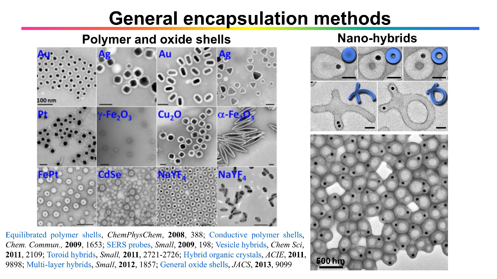
Back then, I often joked that I was “Lord of Encapsulation”, for I was eager to encapsulate all kinds of nanoparticles. I never imagined this line of research would carry me this far. My earliest system relied on amphiphilic block copolymer PSPAA. This polymer features one highly hydrophilic segment and one strongly hydrophobic segment; it self-assembles in solution just like soap molecules, with the hydrophobic segments clustering inward to form a core and the hydrophilic segments extending outward. When nanoparticle surfaces are functionalized with hydrophobic groups, stable core-shell structures can be constructed via self-assembly under optimized conditions. The central challenge lies in distinguishing kinetic versus thermodynamic control: how to grant polymer chains sufficient time and mobility to assemble into the lowest-energy equilibrium state, rather than getting trapped halfway in an unfavorable, metastable intermediate conformation.
Once this core puzzle was resolved, I moved on to tackle other challenges: surface ligand exchange on diverse nanoparticles, and precise regulation over shell-growth processes for a wide range of materials. For instance, conductive polymer and silica shell growth follows kinetic control. The surface ligands on nanoparticles must strike a delicate balance: they need to have strong enough affinity to anchor onto the nanoparticle surface (yet not bind too tightly), while retaining adequate compatibility with the shell precursor materials. The solvent’s solvation capacity also demands careful tuning—otherwise nanoparticle aggregation will occur. Furthermore, the deposition rate of shell materials cannot be overly rapid, to avoid homogeneous nucleation that creates competitive side reactions, among many other constraints.
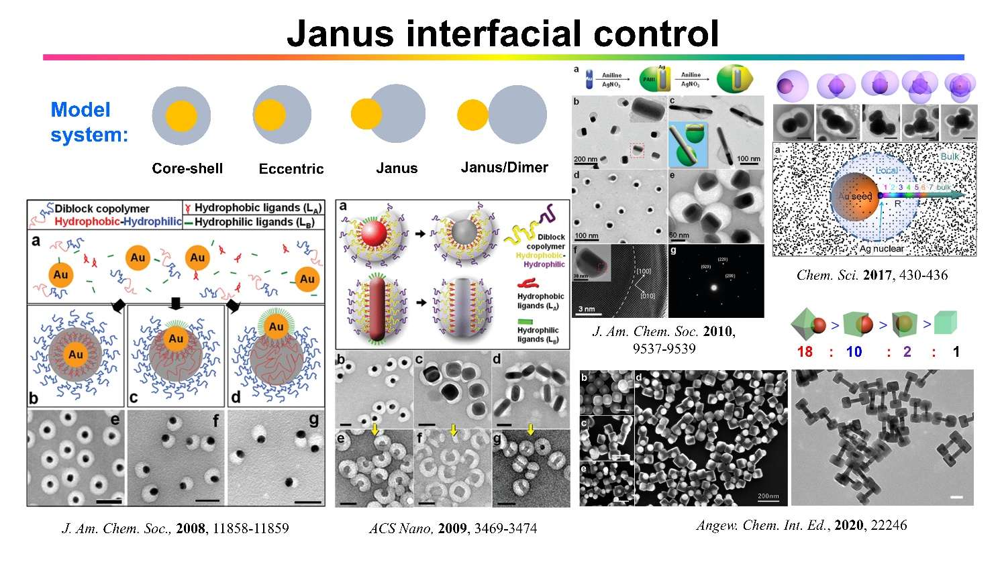
We then stumbled upon an unexpected observation: partial encapsulation would sometimes take place, yielding Janus nanostructures. Such structures had long been a coveted synthetic target for researchers in earlier years, yet reliable preparation remained elusive. Generally speaking, it is relatively simple to synthesize a small number of well-shaped Janus particles, which explains why TEM micrographs in many papers usually only display a handful of individual particles. Fabricating large numbers of uniformly structured Janus particles, by contrast, poses an immense challenge. Our initial strategy leveraged ligand competition to co-anchor hydrophilic and hydrophobic molecules simultaneously on nanoparticle surfaces. These surface species underwent phase separation to form two distinct domains, enabling the synthesis of well-defined Janus architectures. Once we unpacked the underlying mechanism, we developed dedicated synthetic routes for diverse Janus structures. Representative approaches include exploiting the inhomogeneous diffusion of metal ions through polymer shells, applying the Depletion Sphere model established at the moment of nucleation, and selective modulation at solid-solid interfaces, among others.
The core governing principle for this system still hinges on thermodynamic control: under kinetic control, particle-to-particle uniformity is extremely hard to achieve, resulting in low yields and poorly monodisperse samples. In contrast, thermodynamic control drives all particles toward a common equilibrium conformation in terms of encapsulation coverage, thus delivering high-yield products. The PSPAA shell swells into a quasi-liquid state under solvated conditions, allowing the system to readily reach thermodynamic equilibrium. Surprisingly, solid shells — such as silver, cuprous oxide, or silica shells — can also evolve toward the lowest-energy state when the material deposition rate is sufficiently slow. This minimum-energy state can be simplified and explained via wetting effects: if we treat silver as if it were a liquid phase, high wetting affinity between silver and the nanoparticle surface at equilibrium generates core-shell structures, while weak interfacial wetting produces Janus structures. This framework transforms the complex synthesis of Janus particles into a tractable problem of interfacial regulation.
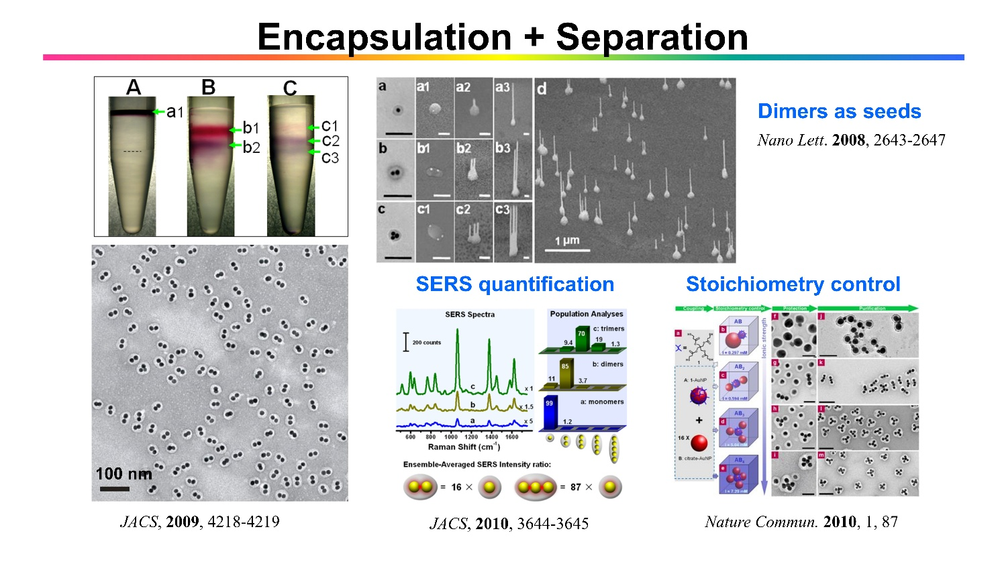
Encapsulation brings a prominent advantage: it enables efficient separation of nanostructures. Back then, synthesizing nanoparticle dimers was a popular research hotspot, yet conventional protocols suffered from low yields. The PSPAA shells on our nanoparticles are functionalized with negatively charged polymer chains, which confer exceptional colloidal stability even in high-salt aqueous media. Hence, we leveraged the density differences within salt solutions to perform separation and obtain highly purified dimer specimens—a record that remains unbroken to this day. We utilized such dimers to quantify the relative intensity of SERS hotspots, and also employed them as seed templates to grow zinc oxide nanowire dimers. Furthermore, by harnessing “covalent bonding” between two types of nanoparticles combined with our separation strategy, we successfully fabricated assembled architectures with arbitrary stoichiometric ratios (1:1, 1:2, 1:3, and so forth). Two core challenges underpin these works: the establishment of reliable separation methodologies, and the realization that electrostatic repulsion between nanoparticles dominates the colloidal aggregation behavior.
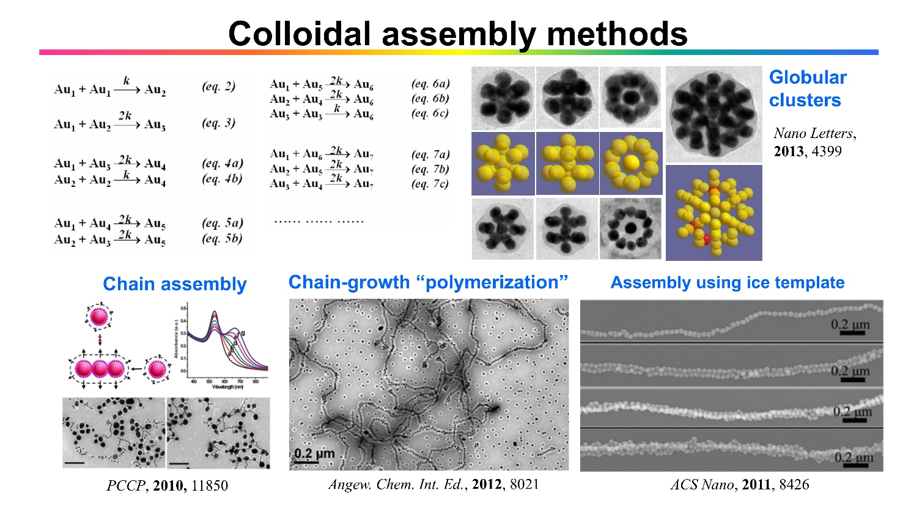
Taking a step further, stable PSPAA shell encapsulation serves as a novel strategy to trap transient intermediates for various processes. We thus systematically investigated the collision and aggregation kinetics of nanoparticles. Our work confirmed that electrostatic repulsion dominates the formation of nanoparticle chains, and unveiled the fundamental distinction between clustered aggregation and chain-like aggregation, governed by electrostatic repulsion versus steric hindrance, respectively. Beyond that, we also established an innovative assembly methodology utilizing ice templates, which exploits interstitial voids formed between ice crystals as a synthetic tool.
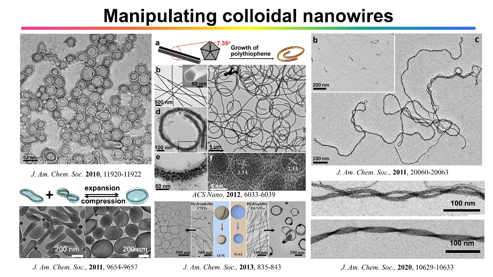
Uniform shells also enable precise manipulation of nanowires suspended in solution. Without accessible means of “making contact” with nanowires, we cannot easily modulate their physical states. Once a homogeneous shell is grown on the nanowire surface, we can leverage the stark difference between the pre-encapsulation and post-encapsulation states. The core mechanism relies on the swelling behavior of polymer shells: in solutions with a high DMF fraction, the PSPAA shell undergoes substantial swelling, adhering to the nanowire surface like an oily film. Upon aqueous dilution of the solvent, surface energy rises and the polymer layer shrinks, forcing the encapsulated nanowire to coil into ring-shaped nanostructures. This strategy also permits reversible switching of these nanorings between flattened and expanded conformations over multiple cycles.
The fundamental principle lies in the energetic preference of nanowires residing within the PSPAA "oily" medium: bending generates unfavorable tensile stress, yet the interfacial interactions (solvation energy difference) provide a stabilizing driving force. After deciphering this trade-off, we eliminated the need for polymer shells entirely by designing oil-droplet emulsion systems. In such emulsions, carbon nanotubes (or palladium nanowires, among others) spontaneously localize within spatially confined microdroplets, which mechanically bends all suspended nanowires into uniform rings. This approach established a robust synthetic route for coiled nanowire rings.
We also made an unexpected discovery: ultra-thin Au–Ag alloy nanowires undergo spontaneous twisting to form double-helical architectures during gold shell deposition. The underlying mechanism is complex and relies on supporting figures, so it will not be elaborated here. Briefly, double-stranded BCB nanowires adopt twisted geometries to reach a lower-energy equilibrium state as their diameter increases. Building on this behavior, we first assemble nanowires into bundles, then apply reaction conditions that induce twisting, yielding bundles of helical rope-like nanostructures.
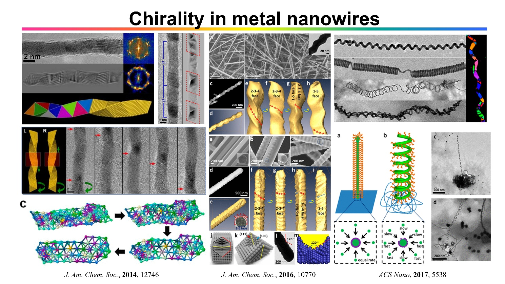
Chirality in nanostructures constitute a highly active research frontier, yet early synthetic systems exclusively produced racemic mixtures, meaning that the helical nanowires within each batch were mixtures of left-handed and right-handed helices. I believe that there is no universal mechanism governing chirality formation. We have published a comprehensive review article on this topic (Chem. Soc. Rev., 2013, 2930) for readers seeking deeper insights, so detailed elaboration will be omitted here. We have pioneered three innovative synthetic paths for chiral helical nanostructures: BCB architectures based on ultrathin gold nanowires; chiral grooves generated via slow etching of silver nanorods; helical nanostructures formed by uneven "extrusion" during active growth (discussed in the following section).
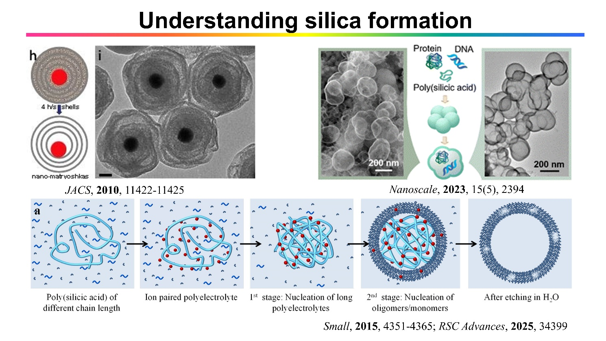
While exploring silica encapsulation, we discovered that silica shells tend to undergo internal etching to give hollow nanostructures. After comparison with all existing literature explanations, we found no satisfactory mechanism that could account for this phenomenon, prompting us to launch an in-depth investigation. In brief, polysilicic acid formed prior to silica formation acts as a water-swollen inorganic polyelectrolyte, analogous to other anionic polymer species. Its precipitation behavior is governed by two key factors: the nonpolar character of the solvent system (by adding organic co-solvents such as ethanol), and counter cations (ammonium ions or inorganic salts are required). Long inorganic polymer chains generated in the early reaction stage absorb a larger quantity of cations, whereas shells formed in the later stage contain fewer cations and exhibit a higher degree of crosslinking. Regions heavily doped with cations inherently possess alkaline character and dissolve preferentially, which enables selective etching of the interior to produce hollow silica particles.
Once this underlying principle was clarified, we devised a series of modified synthetic protocols based on this mechanism. For instance, divalent calcium ions can serve as precipitants to co-precipitate biomacromolecules alongside silica; simple aqueous washing yields hollow structures encapsulating biomolecules. Proton ion exchange, which follows the same principle as polyelectrolyte media used in water purifiers, promotes silica crosslink and slows down its etching rate. Fluorescent organic cations can also undergo co-precipitation with polysilicic acid to produce fluorescent silica nanospheres with tunable emission colors. We believe such organic–inorganic co-precipitation strategies hold great promise for biological applications.

Taking advantage of the colloidal stabilization offered by silica encapsulation, we proposed the concept of nanoscale stir bars. Conventional macroscopic stir bars are millimeter-sized and thus incompatible with mixing inside microdroplets. We assemble magnetic nanoparticles into linear chains under an external magnetic field, then coat the assemblies with a protective silica shell. These submicroscopic, optically invisible stir bars can be driven to rotate on standard magnetic stirrers, driving liquid mixing within microdroplets or microfluidic channels. We can further grow dense gold nanowire forests on the silica surface to raise hydrodynamic drag, which permits quantitative viscosity measurement within microdroplets. Electrospinning technology can be adopted to scale up the fabrication of micrometer-sized stir bars. This concept has been further extended to catalytic and biological research, and quite a few follow-up studies from other research groups have been published based on our initial design.
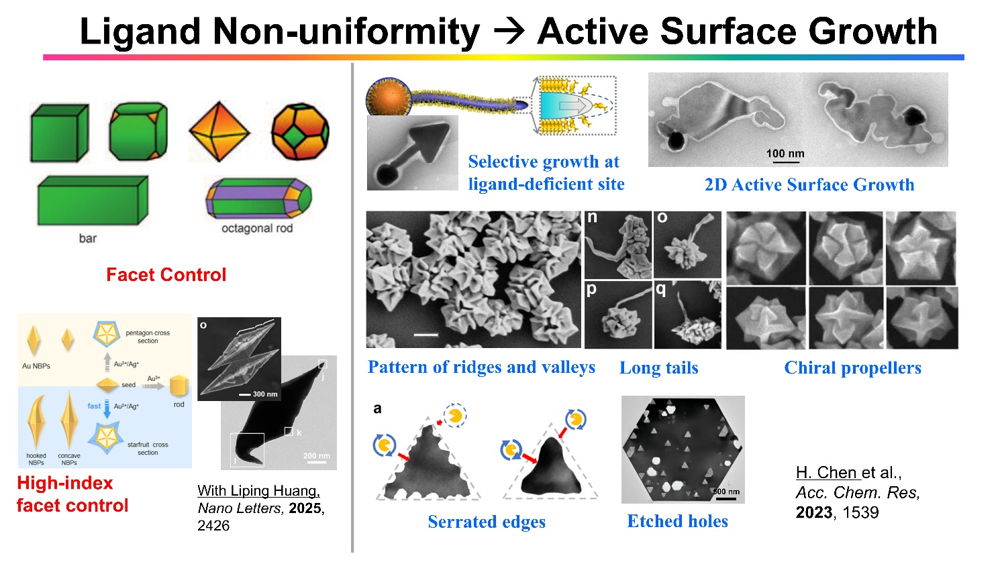
Over the past decade, we have gradually shifted our research focus away from encapsulation systems and centered our efforts on the active surface growth methodology. This is a novel growth mode first discovered in gold/silver material systems: rapid metal deposition driven by strong coordinating ligands prevents the ligands from assembling into a uniform, passivating surface layer. As a result, material growth is localized exclusively at active sites, breaking the intrinsic structural symmetry of nanoparticles. This type of reaction can be likened to the named reactions in organic chemistry. It operates via a fundamentally distinct mechanism compared with conventional crystal facet engineering. By exploiting active sites during deposition and growth, this methodology unlocks unprecedented, versatile control over synthetic nanostructure geometry.
In contrast to the highly symmetric, regular-shaped nanoparticles fabricated via traditional synthetic routes, this active surface growth platform enables the fabrication of a broad spectrum of exotic nanostructures. For instance, triangular domains can be grown selectively at the tip active sites of nanorods to form arrow-shaped architectures. Chiral small-molecule strong ligands can be introduced to generate chiral surface patterns or nano propellers. Active etching sites can be harnessed to produce serrated edges, or localized etching at discrete surface sites can yield through-hole perforations, establishing innovative etching pathways. Our most recent findings indicate that the formation of high-index crystal facets may simply be a consequence of active surface growth, rather than a morphology dictated by surface energy minimization, which governs classic facet-controlled synthesis.

One sub-branch of the active surface growth methodology relies on seed-guided unidirectional growth on solid substrates. Strong coordinating ligands passivate all exposed metal surfaces, restricting metal deposition exclusively to the interfacial junctions between seed nanoparticles and the substrate. This strategy enables the growth of dense nanowire forests anchored on supporting substrates. This synthetic platform supports abundant tunable structural evolution pathways: active surface sites can split dynamically during growth; the binding strength, chemical species, and steric hindrance of coordinating ligands are readily modulated; pulsed electrochemical reduction sequences yield diameter-encoded segmented nanowires; helical nanostructures can be fabricated; ultra-thin platinum nanowire arrays are directly synthesized by employing atomic hydrogen as a passivating ligand, among many other capabilities.
Given their high-surface-area morphology firmly bound to solid supports, we explored gold nanowire forests for organic catalytic transformations. We also investigated electrocatalytic ethanol oxidation, leveraging the unique structural features of nanowire forests to identify and propose novel mechanistic insights into the reaction pathway. In my view, the most impactful real-world application of this architecture lies in flexible electrodes fabricated from interconnected conductive nanowire networks. This breakthrough, however, cannot be credited to our research group. Professor CWL in Australia expanded our synthetic platform, publishing more than one hundred papers focused on flexible electrode technologies built upon this nanowire forest system.
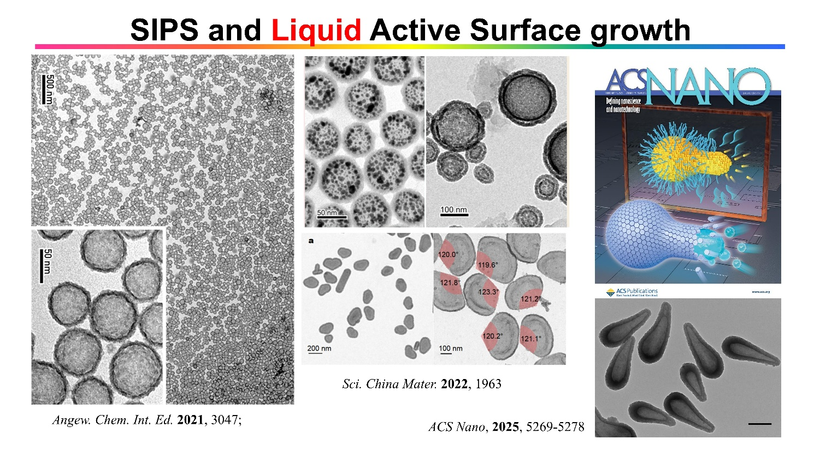
The framework of active surface growth can be further extended to the synthesis of liquid-phase nanostructures. We have achieved two core breakthroughs in this field. The first breakthrough is Solute-Induced Phase Separation (SIPS). Water and ethanol are miscible in all proportions, yet salt addition triggers phase separation because the aqueous salt phase is immiscible with ethanol. While this phase-separation phenomenon itself is known, we repurposed the SIPS effect: we first prepare a homogeneous single-phase solution, then induce the separation of an aqueous salt-rich phase. This process initiates nucleation and growth pathways analogous to those of solid-state nanoparticles. Subsequent encapsulation yields ultrasmall, uniform nanodroplets that are 6–9 orders of magnitude smaller than conventional emulsion droplets. In short, SIPS constitutes a new synthetic route for nanodroplet fabrication.
The second breakthrough is active surface growth of liquid droplets. Ordinary emulsion droplets tend to aggregate and coalesce but cannot undergo continuous growth. In contrast, droplets generated via SIPS steadily “extract” the excluded aqueous salt phase and expand in size. We showed that encapsulation with silica or C₆₀ shells can proceed via active surface growth: during simultaneous droplet expansion and shell deposition, divergence spontaneously emerges across the droplet surface: regions with rapid encapsulation form dense continuous shells that further thicken over time, while active domains with slow encapsulation absorb extra solution to expand their surface area. Shell material only propagates along the liquid–solid interface here, sustaining persistent active sites throughout the reaction.
This platform supports a wide array of derivative synthetic strategies. For example, catalytic metal complexes can replace simple inorganic salts to enable one-pot synthesis of supported hollow architectures. Co-SIPS processes, analogous to co-precipitation, are also accessible. Sequential multistep growth produces multi-layered core-shell structures. Salt crystals can serve as sacrificial templates to fabricate partially encapsulated intermediates, which undergo further full encapsulation after droplet swelling, among other variants.
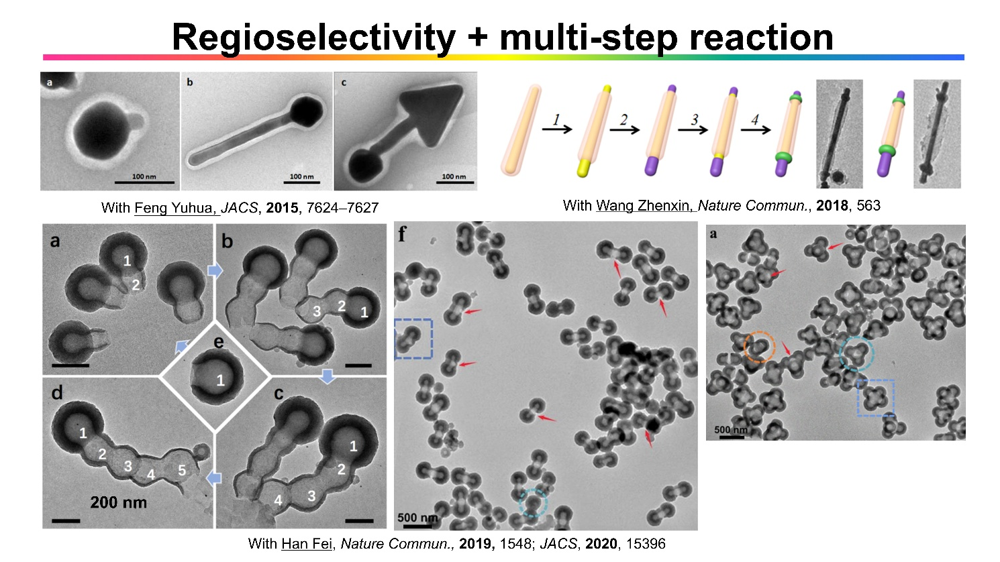
Analogous to multistep synthetic routes in organic chemistry, we aim to establish sequential reaction methodologies for nanomaterial fabrication. Three distinct sytems are presented here to demonstrate this concept: The first relies on active surface growth of gold nanostructures, which proceeds through three sequential stages to ultimately yield arrow-shaped architectures, as introduced earlier in the above text. The second strategy leverages the gradual thermal shrinkage of PSPAA shells combined with metal deposition to construct intricate nanostructures. The third route encompasses two branches: one adopts active surface growth of liquid droplets paired with C₆₀ encapsulation to generate multi-segment gourd-like nanostructures; the other exploits steric hindrance effects of nanobowls to fabricate nanoparticle dimers and tetramers.
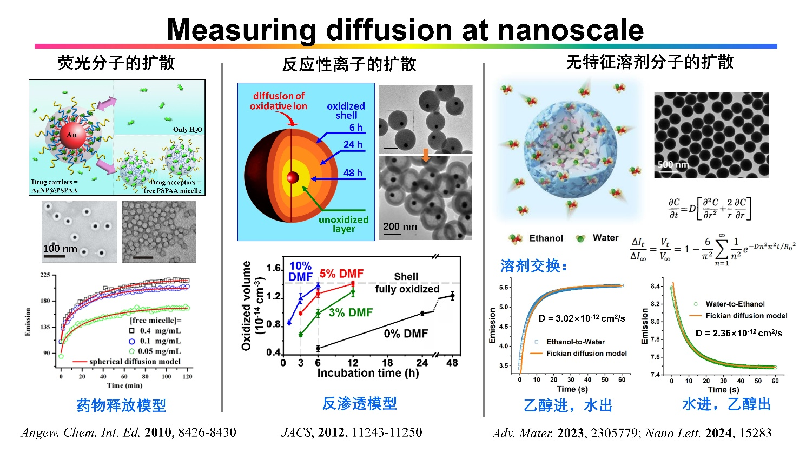
Beyond the development of synthetic methodologies for nanostructures, our group has also explored a distinctive category of functional applications: quantitative measurement of diffusion coefficients at the nanoscale. In our early study, we dissolve pyrene molecules within PSPAA shells. By exploiting fluorescence quenching induced by the gold core combined with stopped-flow spectroscopy, we monitored fluorescence intensity shifts originating from pyrene diffusion—though this setup could not quantify diffusion rates at that stage. In later work, we adopted partial oxidation of oligomeric polyaniline shells using HAuCl₄ to back-calculate the corresponding diffusion rates. The measured diffusion rates were over 700 times slower than those observed in macroscopic membrane systems. This discrepancy originates from the fabrication process of macroscopic membranes: organic solvent swelling creates abundant micropores that govern the overall bulk diffusion transport. Within the nanoparticle-based systems, we validated that trace organic solvents trigger pronounced swelling of polyaniline shells, which drastically alters molecular diffusion kinetics.
Our most recent breakthrough in this field eliminates the requirement for fluorescent probes or reactive ions, enabling direct tracking of non-chromophoric solvent diffusing in nanochannels. Such nanoscale confined transport diffusion—distinct from self-diffusion governed solely by thermal motion—cannot be quantified via conventional characterization techniques. The experimental workflow relies on the organic–inorganic co-precipitation strategy introduced in earlier sections: fluorescent organic cations are co-precipitated with polysilicic acid to form uniform silica nanoparticles. Stopped-flow technique is then applied to achieve homogeneous rapid mixing of two solutions within one millisecond. Solvent molecules subsequently diffuse into the silica nanochannels, changing the local microenvironment surrounding embedded fluorophores and generating detectable fluorescence signals. The narrow size distribution of our nanoparticles and ultrafast mixing simplify the underlying mathematical model, permitting precise calculation of solvent diffusion rate constants.
This research avenue holds promising and unique prospects. We regard nanoscale diffusion measurement as a versatile analytical tool: we can build tailored model systems for targeted applications, develop universal measurement protocols for diverse small molecules and ions, and systematically map the dependence of diffusion kinetics on a broad range of environmental parameters.
Due to space constraints, I have omitted the numerous derivative synthetic approaches and related phenomena here. All the above research revolves around the rational expansion of synthetic methodologies, with deep interconnections running through their underlying mechanistic frameworks—links that may not be readily apparent in this condensed overview. These unifying concepts include ligand interactions, interfacial effects, swelling behavior, aggregation kinetics, nucleation-growth pathways, Ostwald ripening, symmetry and chirality, active sites, crystal facet engineering, curvature effects, defect-induced modulation, and many more, all interacting within an intricate coupled network. As a researcher focused on mechanistic elucidation, my initial instinct was to thoroughly dissect and clarify fundamental questions within simple, well-defined model systems. Yet my research inevitably broadened into increasingly complex territory, as solving one puzzle invariably uncovers a cascade of interconnected unsolved mechanistic problems. That said, this exploratory journey has proven immensely rewarding: every time we unravel a core mechanism, we are able to design brand-new synthetic strategies to fabricate exotic, unconventional nanostructures.
Chemists bear a striking likeness to alchemists, the ancient magicians of antiquity. Both practices involve mixing various chemical reagents within glass vessels, stirring the mixture, and coaxing extraordinary new substances into existence. Viewed from this perspective, nanomaterial synthesis resembles a form of magic. My lifelong research pursuit consists of inventing new varieties of this "magic". Though it remains unclear when these creations will find practical deployment, the work itself brings profound intellectual delight, and I firmly believe these innovations will eventually find valuable real-world applications.